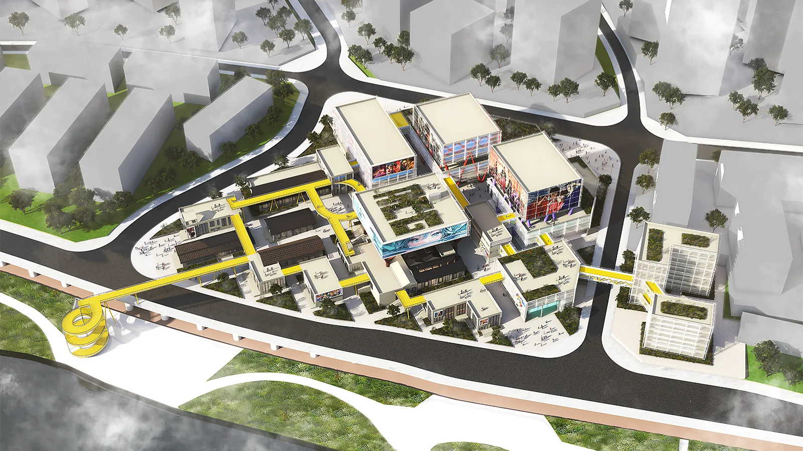
05城市设计
嘉陵旧梦·次元新厂
Jialing Reverie
沿江旧厂区的整体缝合与再生
- 地点
- 重庆市沙坪坝区
- 面积
- 69,190 ㎡
- 年份
- 2026.6
- 团队
- 杨官运、王一凡、刘芸彤
- 来源
- 大四下课程作业
- 指导
- 杨震
- 参与
- 前期分析、方案构思、3D 建模、工程图、后期分析、渲染、后期处理
不是在旧厂房里「装修」，而是在旧厂房之间「生长」。
设计命题
嘉陵机器厂始建于 1938 年，曾生产子弹、枪榴弹，三线建设时期形成大院式的生活社区。产业外迁之后，厂房闲置、人口外流，滨江工业带成了城市记忆与现实发展之间的断层。怎么让这片工业遗产从「城市伤疤」变成「青年目的地」，是设计的核心命题。
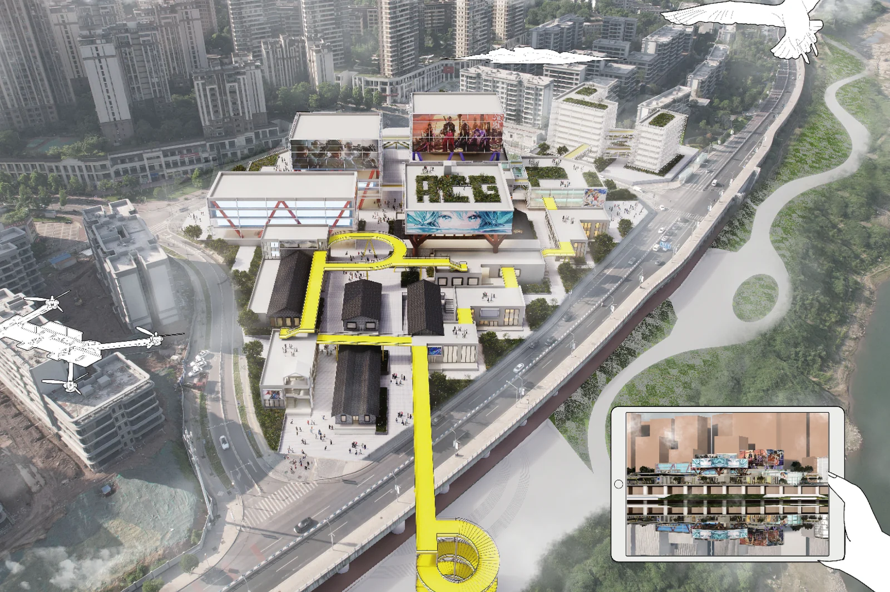
核心策略：工业重生 × 次元新生
保留青砖厂房的粗犷结构与历史记忆，注入电竞、动漫、音乐三条青年文化赛道。按「首层体验引流—中层沉浸转化—顶层内容变现」的垂直逻辑组织功能，再用一套黄色空中廊道把新旧建筑串起来，形成完整的消费闭环。
空间策略：旧厂房保留结构 + 黄色廊道串联 + 三大体验板块垂直叠加
不是在旧厂房里「装修」，而是在旧厂房之间「生长」——保留工业遗存的结构骨架，用明亮的黄色廊道作为新与旧的视觉缝合线；游戏竞技 45%、动漫文化 30%、音乐体验 25%，从地面到屋顶形成完整体验动线。
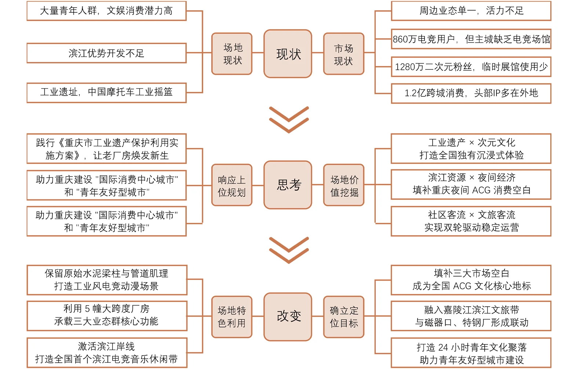
场地与历史沿革
场地位于沙坪坝区嘉陵江北岸沙滨路沿线。1938 年内迁建厂，为军工 25 兵工厂；1958 年三线建设，生产枪弹、机枪弹；1978 年军转民生产摩托车；1980—2000 年代进入民用产业的黄金期；2010 年代以后转向文化记忆。周边有磁器口、重庆天地等文旅节点，但青年文化体验仍是空白。
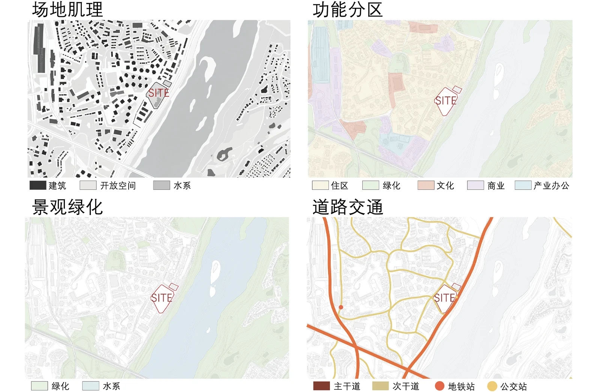
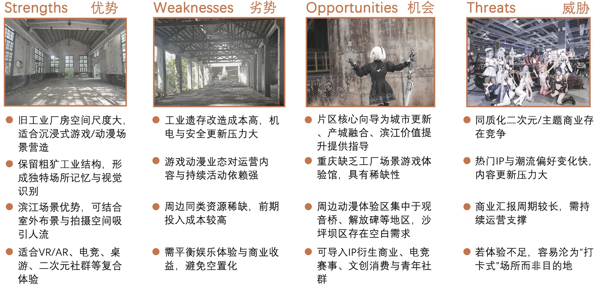
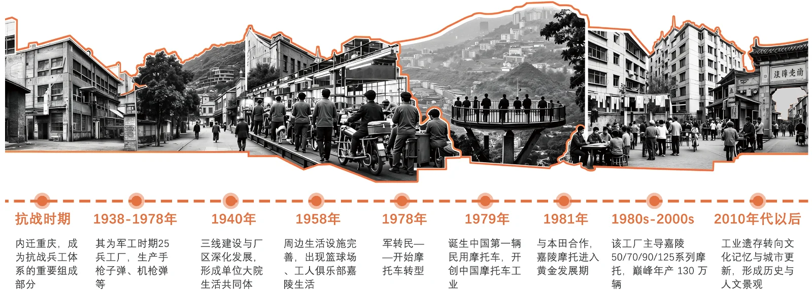
人群定位与业态策略
客群以 18—28 岁的深度 ACG 爱好者与硬核玩家为核心（45%），泛二次元与社交探索者为次核心（35% + 20%）。对比全国电竞、动漫、音乐的市场数据，能看出重庆滨江线上仍缺一个综合性的青年文化目的地——这正是业态植入的切口。
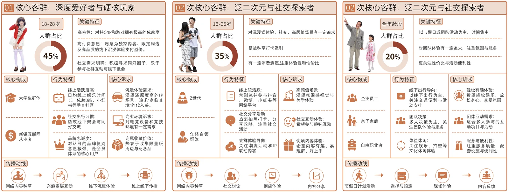
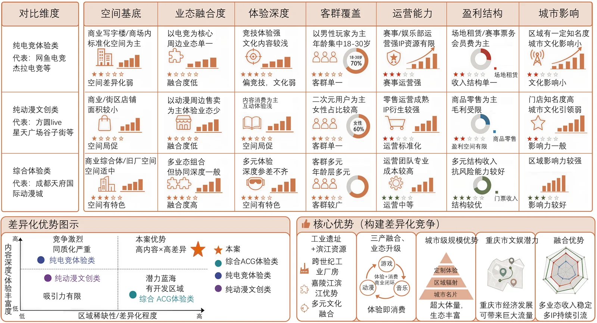
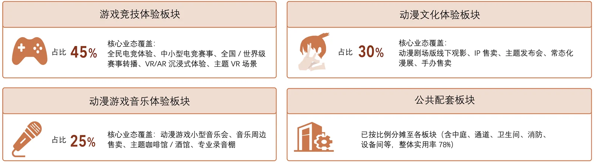
总平面与功能布局
用地 3.10 万㎡，总建面 6.92 万㎡，容积率 2.07。四大板块垂直叠加：游戏竞技 45%、动漫文化 30%、音乐体验 25%，公共配套按比例分摊，整体空间使用率 78%。生成逻辑四步推导：确定轴线骨架 → 组团区分功能 → 场地节点确立 → 编织廊道模块。
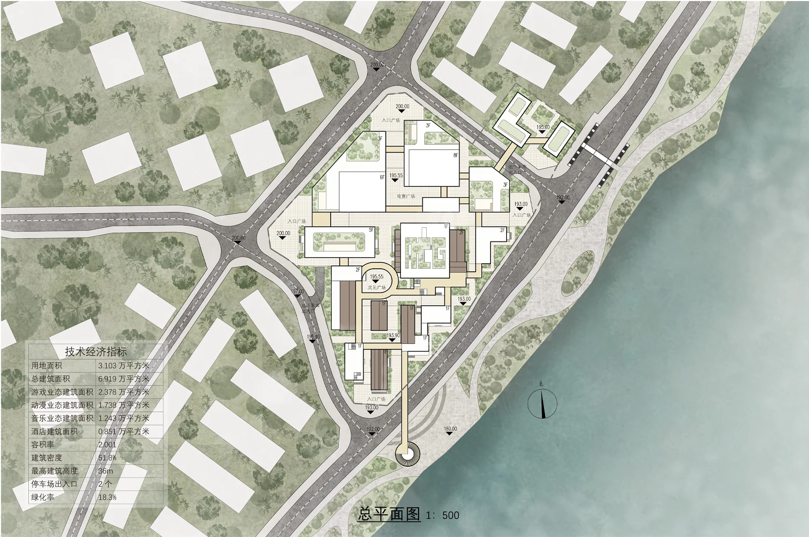
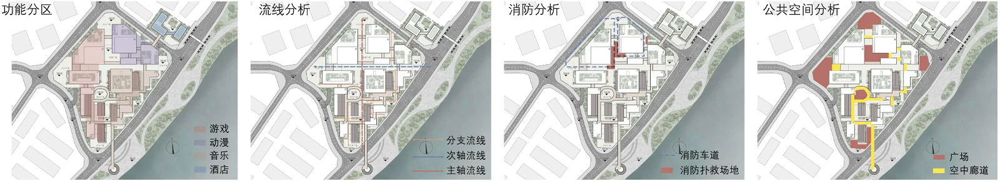
地块功能与整体效果
四个地块各有主题：地块 1 游戏（电竞周边、竞技体验、VR、赛事中心），地块 2 动漫（周边零售、主题餐饮、沉浸展映、发布中心），地块 3 音乐（主题酒馆、Livehouse、咖啡、露天舞台与录音工坊），地块 4 配套（酒店、停车、滨江步道）——支撑前三块的运营。
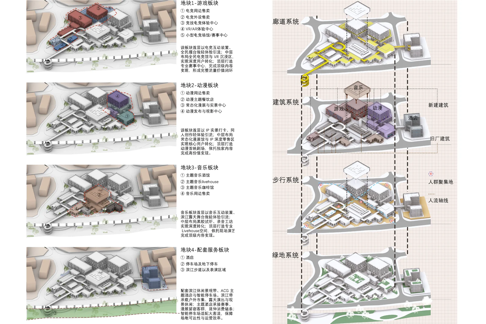
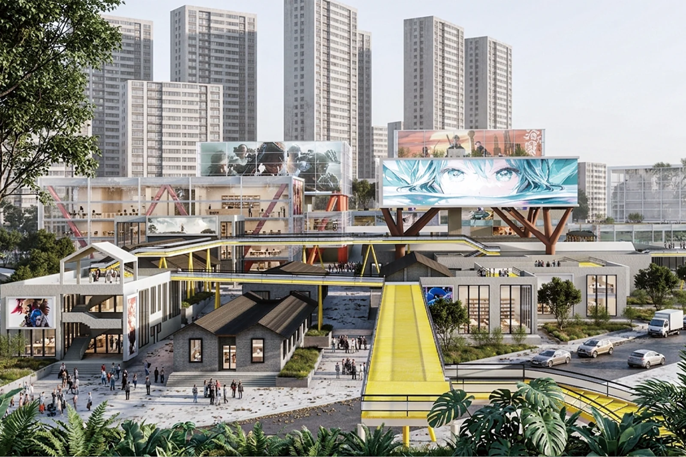
空间剖面与场景
黄色廊道在二层及以上串联全部地块，形成一张空中步行网络——人在廊道里走，可以俯瞰旧厂房的院落，也可以远眺嘉陵江。1-1 与 2-2 剖面展示从滨江步道到内部街区的垂直空间层次。
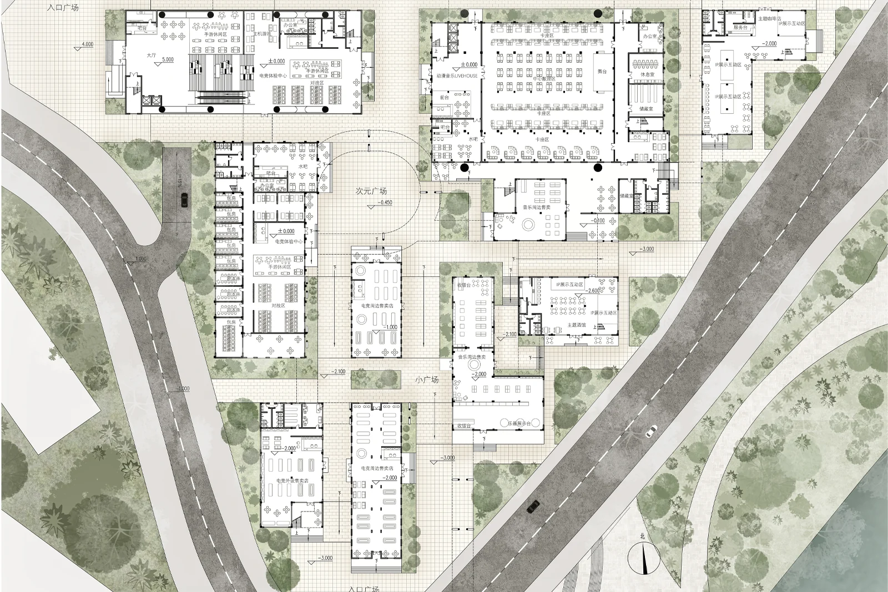
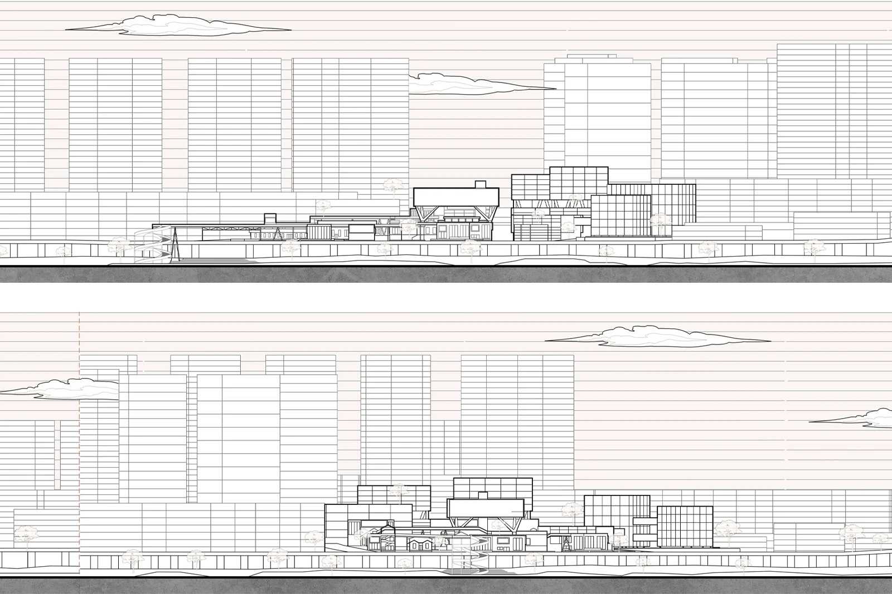
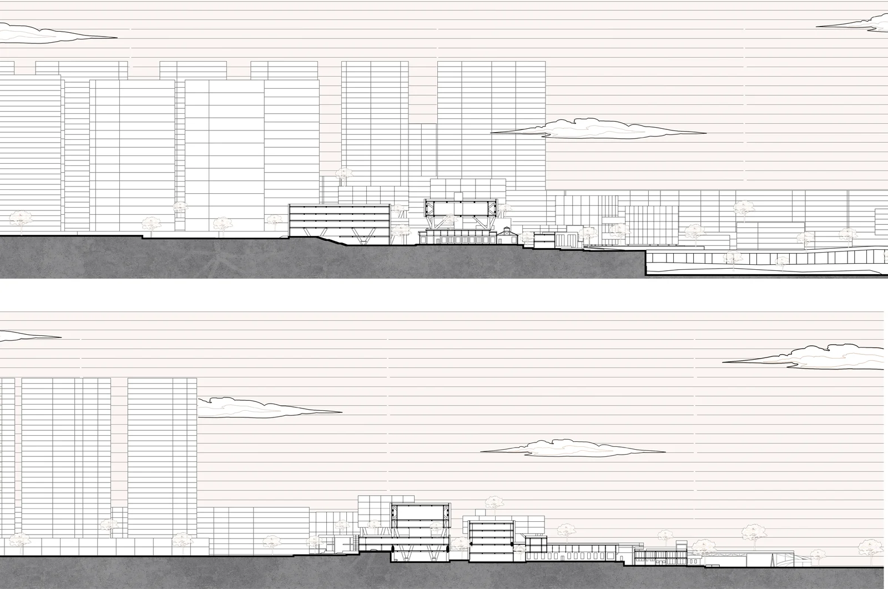
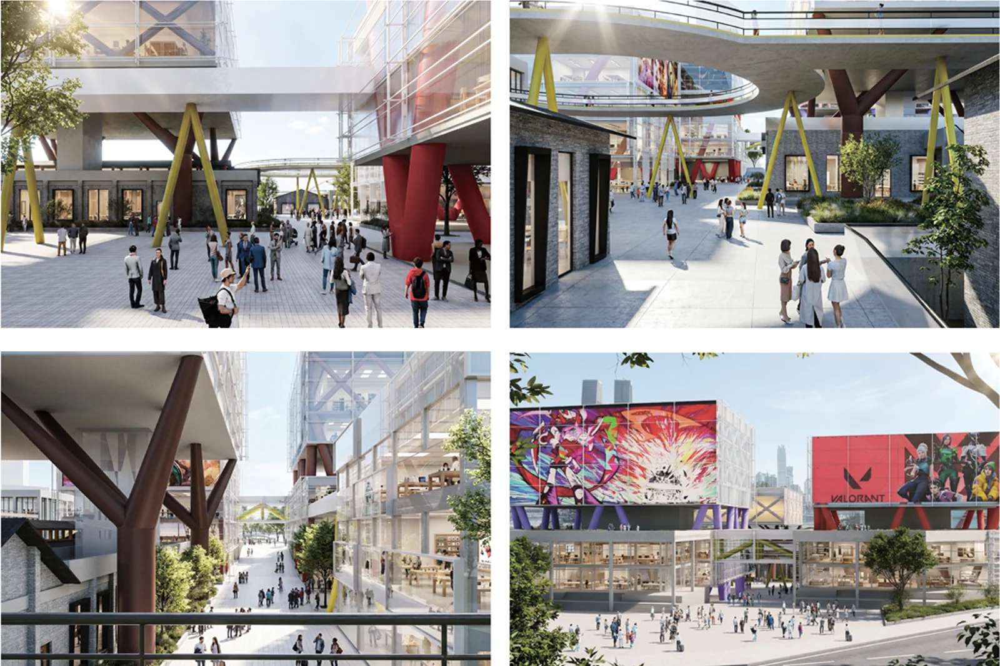